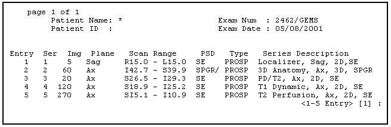

Illustration 9: Series Menu

| NOTE: | When a menu of images is displayed (see Illustration 10), you cannot choose a range of images (for example, 5 10). You can only select them one at a time from the Image menu. See step 9, below, for details on selecting a range. |